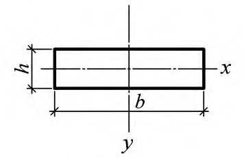

СП 470.1325800.2019 «Конструкции стальные. Правила производства работ»
О документе: разработчики, утверждение, регистрация, ключевые слова
СВОД ПРАВИЛ СП 470.1325800.2019
Издание официальное
1 ИСПОЛНИТЕЛЬ -АО «НИЦ «Строительство» -Центральный научноисследовательский институт строительных конструкций им. В.А. Кучеренко (ЦНИИСК им. В.А. Кучеренко)
2 ВНЕСЕН Техническим комитетом по стандартизации ТК 465 «Строительство»
3 ПОДГОТОВЛЕН К УТВЕРЖДЕНИЮ Департаментом градостроительной деятельности и архитектуры Министерства строительства и жилищно-коммунального хозяйства Российской Федерации (Минстрой России)
4 УТВЕРЖДЕН приказом Министерства строительства и жилищно-коммунального хозяйства Российской Федерации (Минстрой России) от 16 декабря 2019 г. № 815/пр и введен в действие с 17 июня 2020 г.
5 ЗАРЕГИСТРИРОВАН Федеральным агентством по техническому регулированию и метрологии (Росстандарт)
6 ВВЕДЕН ВПЕРВЫЕ
В случае пересмотра (замены) или отмены настоящего свода правил соответствующее уведомление будет опубликовано в установленном порядке. Соответствующая информация, уведомление и тексты размещаются также в информационной системе общего пользования - на официальном сайте разработчика (Минстрой России) в сети Интернет
© Минстрой России, 2019
Настоящий нормативный документ не может быть полностью или частично воспроизведен, тиражирован и распространен в качестве официального издания на территории Российской Федерации без разрешения Минстроя России
СП .1325800.2019
Дата введения - 2020-06-17
УДК ОКС 91.080.01
Ключевые слова: конструкции стальные, правила производства работ, контроль качества, элементы конструкций, конструкции металлические деталировочные, механическая обработка, гибка, маркировка, сборка, защита от коррозии, контрольная сборка, хранение, приемка, конструкции линий электропередачи
РАЗРАБОТЧИК
| Заместитель генерального директора АО «НИЦ «Строительство» по развитию | С.Н. Богачев |
|---|---|
| АО «НИЦ «Строительство» - ЦНИИСК им. В.А. Кучеренко Директор, д.т.н., проф. | И.И. Ведяков |
| Зав.сектором ВЗиС, к.т.н. (ответственный исполнитель) | Д.В. Конин |
Введение
Настоящий свод правил разработан в целях обеспечения соблюдения требований Федерального закона от 30 декабря 2009 г. № 384-ФЗ «Технический регламент о безопасности зданий и сооружений». Кроме того, применение настоящего свода правил обеспечивает соблюдение Федерального закона от 27 декабря 2002 г. № 184-ФЗ «О техническом регулировании».
Свод правил разработан авторским коллективом АО «НИЦ «Строительство» ЦНИИСК им. В.А. Кучеренко (руководитель работы -д-р техн. наук И.И. Ведяков ; ответственный исполнитель канд. техн. наук Д.В. Конин , П.В. Нахвальнов ), ЗАО «ЦНИИПСК им. Мельникова» (канд. техн. наук. В.Ф. Беляев , канд. хим. наук Г.В. Оносов , В.В. Скороспелов ).
КОНСТРУКЦИИ СТАЛЬНЫЕ Правила производства работ
Steel structures. Rules of production work
1Область применения
2Нормативные ссылки
ГОСТ 2.101-2016 Единая система конструкторской документации. Виды изделий
ГОСТ 9.032-74 Единая система защиты от коррозии и старения. Покрытия лакокрасочные. Группы, технические требования и обозначения
ГОСТ 9.072-2017 Единая система защиты от коррозии и старения. Покрытия лакокрасочные. Термины и определения
ГОСТ 9.105-80 Единая система защиты от коррозии и старения. Покрытия лакокрасочные. Классификация и основные параметры методов окрашивания
СП .1325800.2019
ГОСТ 9.402-2004 Единая система защиты от коррозии и старения. Покрытия лакокрасочные. Подготовка металлических поверхностей к окрашиванию
ГОСТ 164-90 Штангенрейсмасы. Технические условия
ГОСТ 166-89 (ИСО 3599-76) Штангенциркули. Технические условия
ГОСТ 427-75 Линейки измерительные металлические. Технические условия
ГОСТ 2601-84 Сварка металлов. Термины и определения основных понятий
ГОСТ 3749-77 Угольники поверочные 90°. Технические условия
ГОСТ 5264-80 Ручная дуговая сварка. Соединения сварные. Основные типы, конструктивные элементы и размеры
ГОСТ 5378-88 Угломеры с нониусом. Технические условия
ГОСТ 7502-98 Рулетки измерительные металлические. Технические условия
ГОСТ 7566-2018 Металлопродукция. Правила приемки, маркировка, упаковка, транспортирование и хранение
ГОСТ 8420-74 Материалы лакокрасочные. Методы определения условной вязкости
ГОСТ 8713-79 Сварка под флюсом. Соединения сварные. Основные типы, конструктивные элементы и размеры
ГОСТ 9980.5-2009 Материалы лакокрасочные. Транспортирование и хранение
ГОСТ 10692-2015 Трубы стальные, чугунные и соединительные детали к ним. Приемка, маркировка, упаковка, транспортирование и хранение
ГОСТ 11284-75 Отверстия сквозные под крепежные детали. Размеры
ГОСТ 11533-75 Автоматическая и полуавтоматическая дуговая сварка под флюсом. Соединения сварные под острыми и тупыми углами. Основные типы, конструктивные элементы и размеры
ГОСТ 11534-75 Ручная дуговая сварка. Соединения сварные под острыми и тупыми углами. Основные типы, конструктивные элементы и размеры
ГОСТ 14140-81 Основные нормы взаимозаменяемости. Допуски расположения осей отверстий для крепежных деталей
ГОСТ 14771-76 Дуговая сварка в защитном газе. Соединения сварные. Основные типы, конструктивные элементы и размеры
ГОСТ 15140-78 Материалы лакокрасочные. Методы определения адгезии ГОСТ 19903-2015 Прокат листовой горячекатаный. Сортамент
ГОСТ 21779-82 (СТ СЭВ 2681-80) Система обеспечения точности геометрических параметров в строительстве. Технологические допуски
ГОСТ 22261-94 Средства измерений электрических и магнитных величин. Общие технические условия
ГОСТ 23118-2012 Конструкции стальные строительные. Общие технические условия
ГОСТ 23518-79 Дуговая сварка в защитных газах. Соединения сварные под острыми и тупыми углами. Основные типы, конструктивные элементы и размеры
ГОСТ 24045-2016 Профили стальные листовые гнутые с трапециевидными гофрами для строительства. Технические условия
ГОСТ 25346-2013 (ISO 286-1:2010) Основные нормы взаимозаменяемости. Характеристики изделий геометрические. Система допусков на линейные размеры. Основные положения, допуски, отклонения и посадки
ГОСТ 27751-2014 Надежность строительных конструкций и оснований. Основные положения
ГОСТ 29273-92 (ИСО 581-80) Свариваемость. Определение
ГОСТ 31149-2014 (ISO 2409:2013) Материалы лакокрасочные. Определение адгезии методом решетчатого надреза
ГОСТ 31993-2013 (ISO 2808:2007) Материалы лакокрасочные. Определение толщины покрытия
СП .1325800.2019
ГОСТ 32299-2013 (ISO 4624:2002) Материалы лакокрасочные. Определение адгезии методом отрыва
ГОСТ 32702.2-2014 (ISO 16276-2:2007) Материалы лакокрасочные. Определение адгезии методом Х-образного надреза
ГОСТ Р 1.4-2004 Стандартизация в Российской Федерации. Стандарты организаций. Общие положения
ГОСТ Р 58033-2017 Здания и сооружения. Словарь. Часть 1. Общие термины
СП 16.13330.2017 «СНиП II-23-81* Стальные конструкции» (с изменением № 1)
СП 28.13330.2017 «СНиП 2.03.11-85 Защита строительных конструкций от коррозии» (с изменением № 1)
СП 70.13330.2012 «СНиП 3.03.01-87 Несущие и ограждающие конструкции» (с изменениями № 1, № 3)
СП 72.13330.2016 «СНиП 3.04.03-85 Защита строительных конструкций и сооружений от коррозии» (с изменением № 1)
СП 260.1325800.2016 Конструкции стальные тонкостенные из холодногнутых оцинкованных профилей и гофрированных листов. Правила проектирования (с изменением № 1)
Примечание - При пользовании настоящим сводом правил целесообразно проверить действие ссылочных документов в информационной системе общего пользования -на официальном сайте федерального органа исполнительной власти в сфере стандартизации в сети Интернет или по ежегодному информационному указателю «Национальные стандарты», который опубликован по состоянию на 1 января текущего года, и по выпускам ежемесячного информационного указателя «Национальные стандарты» за текущий год. Если заменен ссылочный документ, на который дана недатированная ссылка, то рекомендуется использовать действующую версию этого документа с учетом всех внесенных в данную версию изменений. Если заменен ссылочный документ, на который дана датированная ссылка, то рекомендуется использовать версию этого документа с указанным выше годом утверждения (принятия). Если после утверждения настоящего свода правил в ссылочный документ, на который дана датированная ссылка, внесено изменение, затрагивающее положение, на которое дана ссылка, то это положение рекомендуется применять без учета данного изменения. Если ссылочный документ отменен без замены, то положение, в котором дана ссылка на него, рекомендуется применять в части, не затрагивающей эту ссылку. Сведения о действии сводов правил целесообразно проверить в Федеральном информационном фонде стандартов.
3Термины и определения
В настоящем своде правил приведены термины по ГОСТ 2.101, ГОСТ 9.072, ГОСТ 2601, ГОСТ 24045, ГОСТ 25346, ГОСТ 27751, ГОСТ 29273, ГОСТ Р 1.4, ГОСТ Р 58033, а также следующие термины с соответствующими определениями:
- 3.1абразивоструйная очистка
- Процесс очищения поверхности воздействием потока абразива (песок, металлическая дробь, купершлак, корунд, гранатовый песок, кварцевый песок, стеклянная дробь, алюминиевая дробь, стальной песок), который с помощью сжатого воздуха с высоким ускорением направляется на очищаемый объект через сопло.
- 3.2адгезионная прочность лакокрасочного покрытия (адгезия)
- Совокупность сил, связывающих высохшее лакокрасочное покрытие с окрашиваемой поверхностью.
- 3.3деталь
- Изделие, изготовленное из однородного материала без применения сборочных операций.
- 3.4контроль качества
- Деятельность, направленная на обеспечение качества производимых работ путем контроля соответствия выполняемых работ и применяемых материалов, изделий и конструкций требованиям проектной документации, норм и правил.Источник: ГОСТ Р 58033 - 2017, пункт 7.1.28
- 3.5механическая очистка
- Способ очистки поверхности с применением ручного или механического инструмента, специального оборудования, а также методом струйной абразивной очистки.
- 3.6монтажный элемент
- Готовое изделие, отправляемое на монтаж без сборки и сварки на предприятии (фасонка, накладка, прокладка, «рыбка», связь и т. д.)
- 3.7полуфабрикат
- Изделие предприятия-поставщика, подлежащее дополнительной обработке или сборке (стальное литье для опорных частей, поковки, холодногнутые профили и т. д.).
- 3.8сборка
- Соединение в определенной последовательности и закрепление деталей, подузлов и узлов для получения конструкции, соответствующей ее назначению.
- 3.9сварочные деформации
- Перемещения точек сварного изделия (укорочение, изгиб, поворот сечений, потеря устойчивости листа и т. д.) в процессе сварки и последующего охлаждения металла. Примечание - Собственные деформации и напряжения в сварной конструкции называют остаточными.
- 3.10технологический (монтажный) припуск
- Размер монтажного элемента, конструктивно предусмотренный больше требуемого, для максимально точного монтажа этого элемента и (или) компенсации усадок от сварки.
- 3.11элемент
- Составная часть конструкции, сооружения.
4Сокращения
В настоящем своде правил применены следующие сокращения:
КМ - конструкции металлические;
КМД - конструкции металлические деталировочные;
НД - нормативные документы.
5Общие положения
Таблица 5.1
| Класс сооружения по ГОСТ 27751 | Группа конструкций по СП 16.13330 | Область применения |
|---|---|---|
| КС-1 | 2 | Конструкции по СП 16.13330 при контроле качества и авторском надзоре 1) |
| КС-1 | 3 | Конструкции по СП 16.13330 при контроле качества и авторском надзоре 1) |
| КС-1 | 4 | Конструкции по СП 16.13330 при контроле качества |
| КС-2 | 3 | Конструкции по СП 16.13330 при контроле качества и авторском надзоре 1) |
| КС-2 | 4 | Конструкции по СП 16.13330 при контроле качества и авторском надзоре 1) |
| КС-1 | 2 | Конструкции по СП 260.1325800 при контроле качества и авторском надзоре |
| КС-1 | 3 | Конструкции по СП 260.1325800 при контроле качества и авторском надзоре |
| КС-1 | 4 | Конструкции по СП 260.1325800 при контроле качества и авторском надзоре |
| КС-2 (жилые и общественные здания) | 2 | Конструкции по СП 260.1325800 при контроле качества, авторском надзоре и ограничении геометрических параметров 2) |
| КС-2 (жилые и общественные здания) | 3 | Конструкции по СП 260.1325800 при контроле качества, авторском надзоре и ограничении геометрических параметров 2) |
| КС-2 (жилые и общественные здания) | 4 | Конструкции по СП 260.1325800 при контроле качества, авторском надзоре и ограничении геометрических параметров 2) |
СП .1325800.2019
1) Для конструкций из горячекатаных профилей для зданий и сооружений высотой до 6 м и пролетом до 9 м.
2) При количестве этажей не более трех, с пролетами перекрытий до 3,6 м и стропилами или стропильными фермами пролетами до 6 м. В этом случае на строительную площадку поставляются замаркированные линейные монтажные элементы в упаковке, нарезанные под размер, с разметкой под отверстия.
Оборудование должно быть размещено под навесами с возможностью последующего утепления в зимний период проведения работ.
6Входной контроль и хранение металлопроката, сварочных и лакокрасочных материалов, крепежных изделий
- количество по теоретической массе, сортамент и марки сталей по нарядзаказам, клеймам или биркам предприятия-поставщика;
- отсутствие видимых в прокате расслоений, трещин, раковин, закатов, вмятин и общих деформаций, превышающих допустимые условия НД на прокат;
- сопроводительную документацию на детали и элементы заводского изготовления, оформленную в соответствии с ГОСТ 23118.
- повреждение кромок;
- повреждение защитного лакокрасочного и цинкового покрытий;
- скручивание и деформации готовых изделий;
- локальные повреждения в местах соприкасания изделий, в точках подъема и опирания на прокладки;
- повреждение упаковочной пленки.
СП .1325800.2019
Фасонный и сортовой прокат следует хранить на стеллажах с разделительными стойками.
Рулонную сталь следует хранить вертикально или на поддонах в горизонтальном положении.
Допускается временное хранение (в течение 3 мес с момента отгрузки предприятием-изготовителем) профильного проката в стеллажах на открытом воздухе.
- проверять наличие сопроводительного документа, в котором должны быть указаны наименование материала, номер партии и показатели, удостоверяющие соответствие материала требованиям НД;
- определять сохранность тары внешним осмотром;
- определять количество материалов взвешиванием, поштучным пересчетом;
- оформлять приемочным актом;
- при необходимости наносить на тару краской номер приемочного акта, а на тару лакокрасочных материалов - дату окончания их годности.
СП .1325800.2019
7Подготовка металлопроката, сварочных и лакокрасочных материалов
Таблица 7.1
| Профиль | Эскиз | Прогиб относительно нейтральной оси | Предельный допускаемый прогиб, мм |
|---|---|---|---|
| Сталь листовая, универсальная, полосовая, квадрат | х - х у - у | l 2 /400 h l 2 /800 b | |
| Сталь угловая | х - х у - у | l 2 /720 b 1 l 2 /720 b 2 | |
| Гнутосварные профили | х - х у - у | l 2 /400 h l 2 /400 b | |
| Трубы, круг | х - х у - у | l 2 /400 d l 2 /400 d |
СП .1325800.2019
| Профиль | Эскиз | Прогиб относительно нейтральной | Предельный допускаемый прогиб, мм |
|---|---|---|---|
| Швеллеры | оси х - х у - у | l 2 /400 h l 2 /720 b | |
| Двутавры | х - х у - у | l 2 /400 h l 2 /400 b | |
| Гнутый профиль из листа толщиной: t ≥ 4 мм² ≤ t < 4 мм | x -x y - y x -x y - y | l 2 /300 h l 2 /720 b l 2 /360 h l 2 /720 b | |
| П р и м е ч а н и | таблице l - длина отрезка | x -x y - y | |
| t < 2 мм | l 2 /400 h l 2 /720 b | ||
| е - В настоящей элемента с прогибом одного знака. | е - В настоящей элемента с прогибом одного знака. | е - В настоящей элемента с прогибом одного знака. | е - В настоящей элемента с прогибом одного знака. |
- быть без трещин и расслоений. Допускается наличие местных вмятин по толщине и ширине проката на глубину, не более удвоенного значения
СП .1325800.2019 минусового допуска для данного вида проката, предусмотренного соответствующим НД на прокат, но во всех случаях не более 1 мм по толщине и 3 мм по габаритам сечения;
- несовпадение плоскости сечений профильного проката не должно превышать соответствующих допусков, установленных НД для конкретного вида проката;
- предельные прогибы профильного проката по всей длине элемента не должны превышать 0,001 l ≤ 10 мм, а прогибы местного искривления - 1 мм на длине 1,0 м;
- плоскостность листового проката должна соответствовать ГОСТ 19903.
Температура лакокрасочного материала должна быть равной температуре воздуха в помещении (покрасочной камере), для чего материалы должны поступать не позднее чем за сутки до их применения. Температура в помещении должна быть не ниже 15 °С.
8Разметка, наметка, изготовление шаблонов и кондукторов
СП .1325800.2019
Таблица 8.1
| Назначение припуска | Характеристика припуска | Размер припуска, мм |
|---|---|---|
| На ширину реза | При ручной кислородной резке листового проката для толщины стали, мм: 5-25 28-50 50-100 | 4,0 5,0 6,0 |
1) Устанавливается экспериментально в зависимости от толщины листового проката, а также возможных усадок, которые возникают после термической правки.
При изготовлении конструкций нового заказа следует выполнять повторные проверки точности.
Таблица 8.2
| Наименование параметра | Предельное отклонение, мм |
|---|---|
| Внутренний диаметр втулок | +0,15 |
| Расстояние между центрами двух соседних втулок, в том числе по диагонали | ±0,25 |
| Расстояние между любыми втулками в группе, в том числе по диагонали | ±0,35 |
| Расстояние между группами отверстий | ±1,0 |
Таблица 8.3
| Тип детали | Вид отклонения | Предельное отклонение размеров детали | Предельное отклонение размеров шаблона |
|---|---|---|---|
| Опорные плиты | По ширине и длине Зазор между линейкой и поверхностью плиты на длине не более 1 м | ±5 мм | ±2,5 мм |
| Опорные ребра, столики | По ширине По высоте Тангенс угла отклонения | 0,3 мм ±5 мм ±3 мм | 0,15 мм ±2,5 мм ±1,5 мм |
| Ребра жесткости и фасонки: - примыкающие по двум сторонам (рисунок 8.1, а ) | По ширине и высоте Тангенс угла отклонения примыкающих сторон, не | ±5 мм | ±2,5 мм |
СП .1325800.2019
| Тип детали | Вид отклонения | Предельное отклонение размеров детали | Предельное отклонение размеров шаблона |
|---|---|---|---|
| - примыкающие по трем сторонам (рисунок 8.1, б ) Диафрагмы: - примыкающие по трем сторонам (рисунок 8.1, в ) - примыкающие по четырем сторонам (рисунок 8.1, г ) Фасонки, соединяемые с элементами внахлест Листовые детали составных сечений: - полки - стенки Листовые детали сварных | По ширине По высоте в пределах Тангенс угла отклонения примыкающих сторон По ширине в пределах По высоте Тангенс угла отклонения примыкающих сторон По ширине и высоте в пределах Тангенс угла отклонения примыкающих сторон По длине и ширине Тангенс угла отклонения любых двух сторон По ширине То же » | ±5 мм От -2 до -4 мм 0,001 От -2 до -4 мм ±5 мм 0,001 От -2 до -4 мм 0,001 ±10 мм 0,004 ±5 мм ±2 мм ±3 мм | ±2,5 мм От -1 до -2 мм 0,0005 От -1 до -2 мм ±2,5 мм 0,0005 От -1 до -2 мм 0,0005 ±5 мм 0,002 ±2,5 мм ±1 мм ±1,5 мм |
Рисунок 8.1
| Тип детали | Вид отклонения | Предельное отклонение размеров детали | Предельное отклонение размеров шаблона |
|---|---|---|---|
| То же, при передаче усилия через торец | По длине | ±3 мм | ±1,5 мм |

9Резка и механическая обработка деталей
СП .1325800.2019 разделки кромок должны соответствовать требованиям НД на сварные соединения.
Контроль значений шероховатости торцов деталей осуществляется визуально с применением эталонных образцов или профилометров.
Кромки не должны иметь трещин, заусенцев и завалов. Антикоррозионное покрытие после резки должно быть восстановлено. Газовая резка оцинкованных гнутых профилей и гофрированных листов не допускается.
10Образование вырезов и отверстий
Доработка отверстий под болты, выполненных путем прожига или термической резки, производится рассверловкой, шабрением, зенкованием или развертыванием с удалением обезуглероженного слоя на толщину не менее 0,5 мм, а также в следующих случаях:
- конусность стенок отверстия превышает допуски, установленные ГОСТ 21779;
- форма и диаметр отверстия не соответствует ГОСТ 11284;
- расположение осей отверстий находятся вне допуска по ГОСТ 14140.
где d н - номинальный диаметр заклепки.
Таблица 10.1
| Диаметр винта, мм | Диаметр отверстий при толщине пакета, мм | Диаметр отверстий при толщине пакета, мм | Диаметр отверстий при толщине пакета, мм | Диаметр отверстий при толщине пакета, мм | Диаметр отверстий при толщине пакета, мм | Диаметр отверстий при толщине пакета, мм | Диаметр отверстий при толщине пакета, мм | Диаметр отверстий при толщине пакета, мм | Диаметр отверстий при толщине пакета, мм | Диаметр отверстий при толщине пакета, мм |
|---|---|---|---|---|---|---|---|---|---|---|
| Диаметр винта, мм | 1,5 | 1,8 | 2,0 | 2,5 | 3,0 | 3,5 | 4,0 | 4,5 | 5,0 | 6,0 |
| 4,2 | 3,2 | 3,3 | 3,4 | 3,4 | 3,5 | 3,6 | 3,7 | - | - | - |
| 4,8 | 3,7 | 3,9 | 4,0 | 4,1 | 4,6 | 4,6 | 4,6 | 5,0 | - | - |
| 5,5 | - | 4,5 | 4,6 | 4,8 | 4,8 | 4,9 | 4,9 | 5,0 | 5,0 | - |
| 6,3 | - | 5,2 | 5,4 | 5,6 | 5,7 | 5,7 | 5,8 | 5,8 | 5,8 | 5,8 |
- образование отверстий допускается производить только сверлением;
- номинальные диаметры отверстий для болтов, работающих на срез, должны быть на 1 мм больше номинального диаметра стержня болта;
- отклонения диаметра отверстий должны быть в пределах +0,6 мм;
- отклонения длины обреза от центра отверстия (по одному отверстию на концах элемента для постоянных болтов) должны быть не более 1,5 мм;
- допускаемые отклонения размеров между отверстиями не должны быть более:
±0,7 мм - между смежными отверстиями в отдельных элементах;
±1,0 мм - между центрами групп отверстий (для стыков с другими элементами);
±1,0 мм - сдвига групп отверстий для стыков в смежных поясах сварных секций вдоль оси секций.
11Сварка
11.1Общие требования
11.2Сборка и сварка конструкций
СП .1325800.2019 конструкций, при этом значения предельных отклонений размеров копиров должны быть в два раза меньше соответствующих отклонений размеров, принятых для конструкций.
- прихватки собираемых деталей в конструкции необходимо располагать только в местах наложения сварных швов;
- катет шва прихваток устанавливают минимальным в зависимости от толщины соединяемых элементов согласно СП 16.13330;
- длина сварного шва прихватки должна быть не менее 30 мм, расстояние между прихватками - не более 500 мм, на каждой детали должно быть не менее двух прихваток;
- сварочные материалы для прихваток должны соответствовать таблице Г.1 СП 16.13330.2017 и обеспечивать качество наплавленного металла, соответствующее качеству металла сварных швов по проектной документации;
- при сборке конструкций большой массы размеры и расстановку прихваток определяют с учетом усилий, возникающих при кантовании и транспортировании.
Запрещается зажигать дугу на основном металле вне разделки кромок или вне зоны расположения сварного шва.
- при ручной дуговой сварке - ГОСТ 5264, ГОСТ 11534;
- при автоматической сварке под флюсом - ГОСТ 11533, ГОСТ 8713;
- при сварке в среде защитных газов - ГОСТ 14771, ГОСТ 23518.
11.3Контроль качества сварных соединений
12Требования к контрольным сборкам
Контрольная сборка должна подтвердить совпадение отверстий в монтажных стыках, плотность примыкания в стыках с передачей усилий через поверхности, отсутствие зазоров и депланаций в соединениях.
При сборке конструкций в каждом соединении должно быть поставлено достаточное количество болтов и пробок для обеспечения неизменяемости конструкции и безопасности проведения сборки, но не менее одного болта и одной пробки.
13Требования к проведению термической правки
Деталям и элементам, подлежащим сварке, следует по возможности придавать предварительное обратное смещение или компенсирующую перемещения и деформации от сварки обратную деформацию.
СП .1325800.2019
Термомеханическую правку сложных форм деформаций с применением статических нагрузок (пригрузом, домкратами, распорками) следует производить при температуре зон нагрева 650 °С - 700 °С. При этом остывание металла ниже 600 °С не допускается.
Запрещается охлаждать нагретый металл сжатым воздухом или водой.
14Требования к производству работ при защите от коррозии
- зачистка сварных швов и рядом расположенных поверхностей конструкций от брызг расплавленного металла, остатков флюсов, шлака;
- удаление заусенцев и острых кромок;
- обезжиривание замасленных металлических поверхностей перед механической очисткой;
- механическая очистка поверхности от ржавчины и окалины;
СП .1325800.2019
- обеспыливание обдувкой сжатым воздухом (или промышленными пылесосами).
Перед нанесением лакокрасочных покрытий на поверхность горячего цинкового покрытия его предварительно подвергают абразивоструйной очистке с применением мелкого абразива для придания шероховатости.
- выполнение полосового окрашивания;
- сушка покрытия;
- нанесение грунтовочного покрытия;
- сушка грунтовочного покрытия;
- нанесение промежуточных и внешних слоев покрытия с сушкой каждого слоя.
Метод нанесения лакокрасочных материалов следует устанавливать по ГОСТ 9.105 в зависимости от вида применяемого лакокрасочного материала, габаритов и конфигурации конструкций.
Технологические режимы нанесения лакокрасочных материалов устанавливают в соответствии с НД на конкретный применяемый материал.
- подготовки поверхности;
- лакокрасочных материалов;
- защитных покрытий.
СП .1325800.2019 освещении 100 % поверхности конструкций. Покрытие должно быть без пропусков, пузырей, трещин, сколов, кратеров и других дефектов, влияющих на защитные свойства, и по внешнему виду должно соответствовать СП 28.13330 и ГОСТ 9.032.